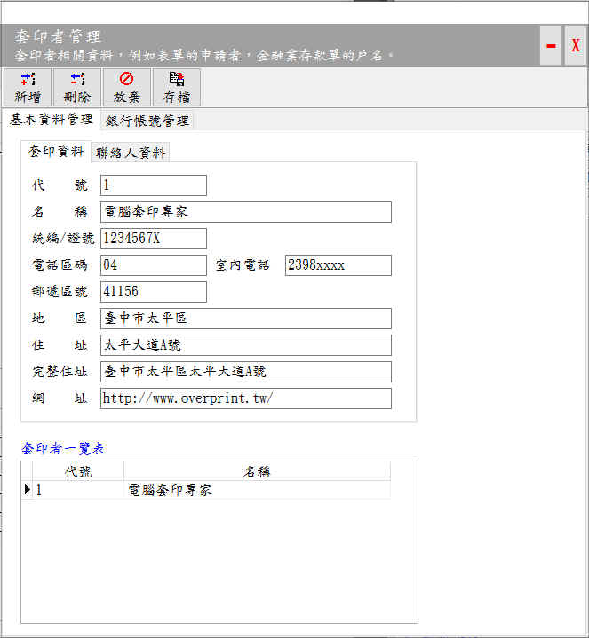
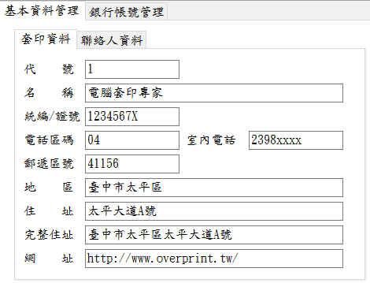
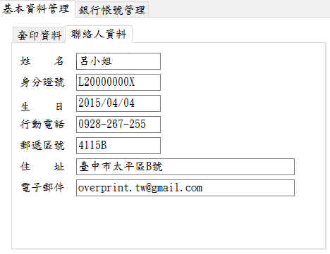
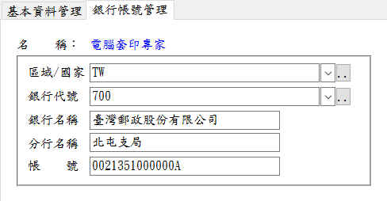

基本資料管理
基本資料管理可以編輯軟體使用者的相關資料，當套印表格需要使用者的資料時，可由此處取得，因此每個欄位都應該盡可能詳實輸入。
需先於「基本資料管理」工作頁，輸入相關資料，並且按下「存檔」鈕後，才可以進「銀行帳號管理」工作頁，進行銀行帳號登錄，輸入完成後，請按「存檔」鈕。

套印者管理視窗
基本資料管理
基本資料管理是套印(使用)者的資料，各種表格套印均可由此取得使用者相關資料。

基本資料管理–套印資料

基本資料管理–聯絡人資料
銀行帳號管理
- 金融業相關表格(如支票、存取款單、匯款單..)銀行帳號管理為必要項目。
- 可以輸入銀行代碼(例如700)的方式，迅速找出該銀行(例如臺灣郵政股份有限公司)。(農會、漁會、信用合作社因為共用同一代號，因此無法使用此方式正確取得資料)。

銀行帳號管理工作頁